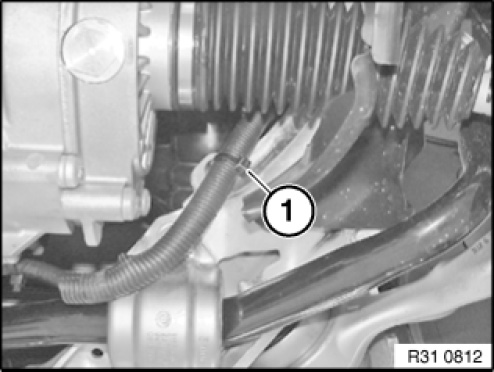
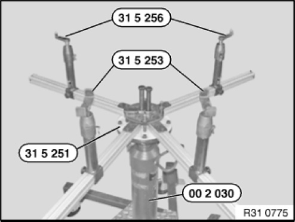
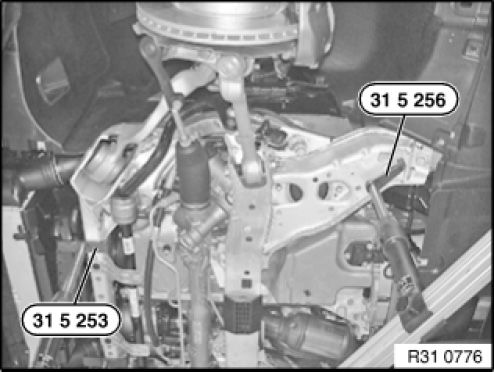
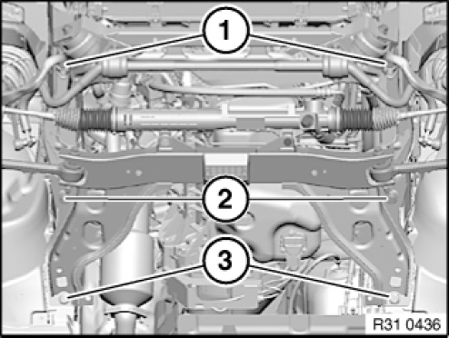
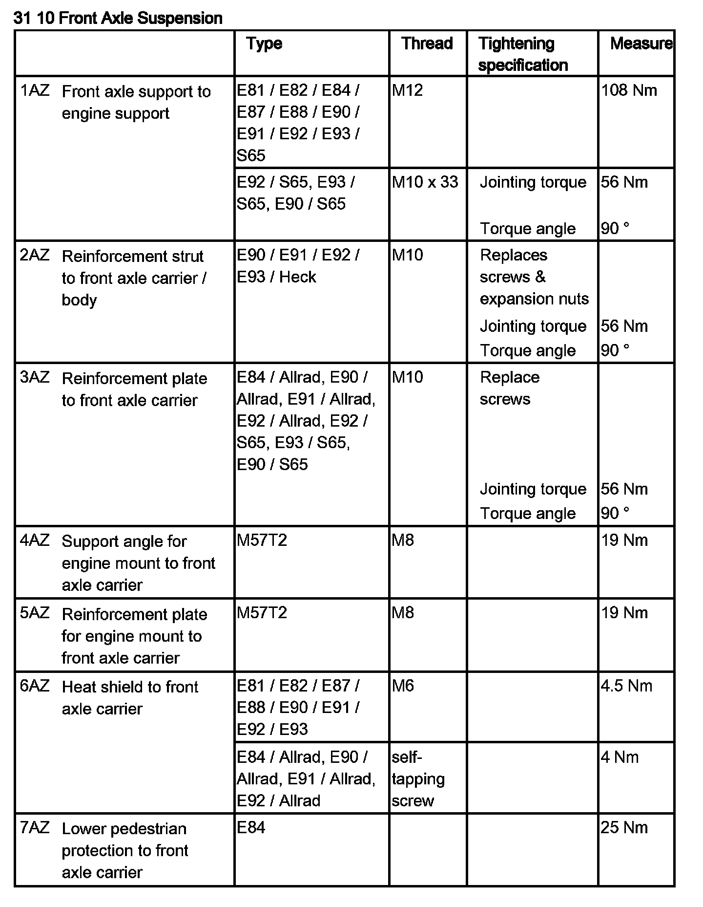

31 11 506 Lowering/Raising Front Axle Support
31 11 506 Lowering/raising front axle support (universal lifter)
Special tools required:

WARNING:
Danger of injury.
Failure to comply with the following instructions may result in the vehicle slipping off the lifting platform and critically injuring other persons.
When supporting components, make sure that:
- the vehicle can no longer be raised or lowered
- the vehicle does not lift off the locating plates on the vehicle hoist.

IMPORTANT:
Before lowering/removing front axle support:
Observe safety information for raising the vehicle
In order to avoid damage to vehicle hoist, perform weight compensation on vehicle.
Load spring strut domes with sand bags.
WARNING: Secure engine in installation position with special tool to prevent it from falling down.
IMPORTANT: N47, N57: Risk of short circuit on starter.

Necessary preliminary tasks:
- Secure engine in installation position.
- Remove front assembly underside protection.
- If necessary, remove radiator seal.
- If necessary, remove steering box cover on left and right.
- Remove E90, E91, E92: stiffening strut.
- Remove E88, E93: V-strut on left and right.
- Remove E88, E93: diagonal struts from mounting fixture.
- E84: If necessary, remove pedestrian protection.
- Remove steering shaft from steering gear.
- If necessary, disconnect plug connection to ride height sensor.
- If necessary, disconnect vacuum line from electric changeover valve to engine mounts at T-piece.

Version with Electronic
Power Steering (EPS):
Cut open cable tie (1) for connecting line on front axle support.

Engage special tool 31 5 251 with a 2nd person helping completely on workshop jack 00 2 030.
Insert special tools 31 5 253 in telescopic supports of a profile rail pair.
Insert special tools 31 5 256 in telescopic supports of other profile rail pair.
NOTE: In a profile rail pair, two profile rails are connected to one another by gearing.

The jacking points on the left side are shown.
Align special tools 31 5 253 and 31 5 256 to front axle support.
Support front axle support by operating workshop jack 00 2 030.
IMPORTANT: The centre of gravity of the front axle must lie in the middle above the workshop jack.
IMPORTANT: Pay attention to hydraulic steering hoses and lines when lowering and raising. Hoses/lines must not be kinked/tensioned/bent.

Release bolts (1-3).
Tightening torque 31 10 1AZ.
Lower front axle support a maximum of 10 cm; if necessary, disconnect radiator return hose/coolant pipe from front axle support.
Installation note:
Check threads for damage; if necessary, repair with Helicoil thread inserts.
Make sure screws are installed in correct positions.
- Bolt (1) M12x90
- Screw (2) M12x145
- Screw (3) M12x53
Tighten down first screws (1) and then screws (2,3).
